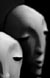
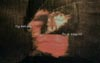
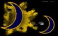
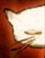
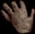

78 Honning. En lett erotisk antologi.
Honning. En lett erotisk antologi.
77 Abstract. Av Rune Spaans.
76 Konkylie. Av Morten Skogly
75 Abstrakt. Av Morten Klouman
74 Under. Dikt av Olava Bitnes. Illustrasjon av Cecilie Ellefsen
73 Abstraksjon. Animasjon i RealMedia. Av Morten Skogly
72 Albuebilder. Av Siri Vaggen Olsen
71 Nattevake. En novelle av Silje Strand. Illustrert av Rune Spaans.
70 Hund. Dikt av
Kamilla Mathisen. Illustrert av Cecilie Ellefsen.
69 The summer is over but we are still not saved. Av Action Unn.
68 Masken. Tekst av Tor Mindrebø. Illustrasjon av Cecilie Ellefsen. Dette diktet ble kåret til månedens poetikon på dagbladet:poesi i januar 2000.
67 Men vi holder. Dikt i tekst og lyd av Sigrid Marie Refsum.
66 Treet og roen. Dikt av Linn C. Martinsen. Illustrasjon av Rune Spaans.
65 Skulpturskisse, av Morten Skogly. Soundtracket er ved Spore (http://www.mp3.com/spore/)
64 Ansikt, av Morten Skogly . Et lite bilde mail.
63 Glass, av Terje Hoel . Et dikt.
62 Blå 2, av Morten Skogly . Enda en negativ hvitløk.
61 Blå 1, av Morten Skogly. En negativ hvitløk.
60 Når du er, av Asbjørn Moen . Et dikt i HjerteSmerte-antologien.
59 Min i alt, av An-Magritt Moen. An-Magritt har laget et skrekkelig skummelt bilde av noe så enormt hyggelig som en katt. Det er til og med hennes egen katt!
58 Se meg, av Cia Maria Giske . Et dikt i HjerteSmerte-antologien.
57 Er du grå?. « Grå » er en åpen antologi med enkle gråsorte bilder og animasjoner. Har du noe som passer inn? Send det til poetikon@hotmail.com.
56 Små ting. Små ting er en åpen antologi om små ting, og hvor fine og viktige de er. Foreløpig inneholder den bare bilder av små ting, som klinkekuler og sånn, men hvis du har lyder eller tekst eller ord som du syns er små så kan du sende dem til Poetikon, thank you very much!
55 Pixelpeople. Fire nye bilder i serien pixelpeople, en billedserie med portretter som alle har utgangspunkt i tilfeldige captures fra tv og video. Orginalbildene er fra a) et nyhetsinnslag på fransk TV5 24. april 1999, b) fra en film som gikk på tve 15. september 1999, og c) og d) en værdame på tve 10. oktober 1999.
54 Lener seg bakover.. Flash. Av Morten Skogly.
53 Ansikt, av Morten Skogly. Animasjon laget i Macromedia Flash.
52 Den gale mannen og sola, av Morten Skogly. "Jeg holder på med en tegneserie eller tegnefilm om en mann som blir gal og går ut i ørkenen, og så begynner sola å snakke til ham" -m.
51 Den gale mannen og sola, av Morten Skogly. Den gale mannen om natta. Han har tatt på seg den magiske hatten. Han er glad for at sola er gått ned.
50 Fake polaroids, av Morten Skogly.
49 Girl on Cancas : Videograb + Fotografi.
48 Plastbilde : Et fint resirkulert bilde laget av bølgepapp, spisbar maling, og plastbiter skjært av en tom klorinflaske.
47 Uten navn : En forenklet versjon av en bildeskulptur laget av en pizzagrandiosaeske, grønne glasskår, frysetape og spisbar maling. Klikk for det opprinnelige bildet spleiset med et videobilde. (Til sammen heter bildet "girl with blue fish" :) )
46 Ikke fullt så grønn : Et altfor trist kjærlighetsdikt skrevet av Morten Skogly. Bildet et laget med Flash3, av alle ting, og er rett og slett en vektorisering av "Ansikt med lukkede øyne".
45 Hemmelig Fotografi :).
44 Jomfru Maria nøkkelring og legoskjelett, av Morten Skogly. Fotografi tatt i oppvaskkummen.
43 Tap t
42 Fotografier av Lena Bakke.: Nykommer i Poetikon men noen nydelige fotografier.
41 En hund kan elske en kylling.: Fjerntekst hentet fra en såpe på TV Norge, 9, juni 1999.
40 death is war is hate is love is peace is god: Et bilde laget av jørgen sørheim.
39 Pixelpeople: Dette bildet er laget av MS og er basert på bilde grabbet fra tv-serien Baywatch den 4 mai 1999.
38 Hjertefisk: Bildet er av noe hemmelig fra havet og hvis du klikker på det røde hjerte kan det hende du får se en aldri så liten animasjon av et rødt hjerte og en bankende fisk.
37 Ingenting til din tid. Laget av Morten Skogly, som sier: "Jeg ønsket å ta verdens mediafolk og politikere vekk fra trygg grunn, ta fra dem deres eiendeler og gjøre dem til flyktninger. Ikke fordi de er "slemme mennesker" men fordi de tilhører to yrkesgrupper som har makt til å gjøre det samme med andre mennesker, slik som i konflikten i Kosovo. Det første bildet er av en fransk nyhetsoppleser som kaster seg foran kamera i et håp om at hans historie skal bli hørt, og det andre er av frankrikes president, som forteller om familien sin som ble drept under Bosnia-konflikten."
36 Novelle: På Skagen en sommer. Skrevet av Silje Strand.
35 La belle noiceuse. De vakre bråkmakerne.
34 Regntung: Bildet er fra filmen "1984" og teksten er fjerntekst, men jeg vet ikke hvor fra -ms.
33 Engel med brukket vinge: Selvportrett, av Morten Skogly. Burde vært olje på lerret, men det er nok laget i photoshop.
32 Pixelpeopleportrett
31 Dette er ingen rosenhage: Eksperimentering med hvordan akttegninger kan forvandles til rare, pene ting. Fjernteksten er fra tv-serien M.A.S.H.
30 Du gikk for langt: Akttegning, av Morten Skogly
29 Lener seg bakover: Akttegning av Silje, modifisert av Morten (uferdig).
28 Molefunkenfjes: Modifisert akttegning av Morten.
27 Ansikt med lukkede øyne
26 Pixelpeople: Et bilde i en serie portretter av folk som er funnet innimellom billedskift i forskjellige tv-serier og filmer.
25 Fjerntekst: Det var ikke noe jeg nøt.
24 Sorthvitt abstrakt ting
23 Naglenes sang, av Morten Skogly: Et javadikt.
22 Denne samtalen kjeder meg: Fjerntekst pluss et hemmelig bilde.
21 Ok, av Morten Skogly. PixelPeople-portrett.
20 Denne samtalen kjeder meg, av Morten Skogly Utgangspunktet er pixelrert realvideo som er blåst opp og "justert". Bildet er en del fra serien
PixelPeople.
19 Vi har gått langt. Den blodige bakgrunnen er en kollage av dopapir og brun maling :) og er laget av Morten.
18 Englefjes, av Rune Spaans. Denne engelen er tiltenkt rollen i en mulig
animasjonsfilm som er tenkt planlagt laget i en tenkt fremtid. Arbeidstittelen på filmen er "Asymmetriske engler" og vil bli svært saktmodig og trist, forhåpentligvis. Engelen har asymmetriske vinger, asymmetrisk ansikt og asymmetrisk kropp, og er kledt i en tekstur som ser ut som leire. Den er modellert i 3D-studio max av
Rune Spaans, basert på et fotografi tatt av
Silje Strand.
17 Jeg greier ikke holde fast ved noe, av Rune Spaans Dette er et av de mange sammentreffene som har oppstått i denne antologien.
Rune sier: Jeg lagde bildet en dag jeg følte meg en smule desillusjoner, men jeg kunne ikke helt sette fingeren på hva det var". Bildet ble lagt inn på denne siden, som allerede hadde en fjerntekst liggende. Da Rune så teksten og bildet sammen, ringte det en bjelle: "Aha, nettopp! Det var det!". Jeg greier ikke holde fast ved noe.
16 Skjell, fotoggrafert med makrolinse og invertert av
Morten. Dette bildet ble tatt i 1996, og var et av de første bildene som ble lagt ut på Poetikon (med en annen eksponering). Desverre forsvant disse første sidene, og pga av desilusjonisme (som faktisk ikke er en mental tilstand men faktisk en egen dimensjon) ble ikke bildet funnet frem igjen før nå, i forbildelse med at vi fikk låne et digitalt videokamera, og slapp å dille med scannere etc (scanning er et av de mest kjedelige tingene et menneske kan gjøre, nest etter å skifte dynetrekk og måke snø, som forøvrig er hva som holder den desilusjonistiske dimensjon sammen) (hvis du nå tenker: hva i svarte er dette for sprøyt, har du antageligvis ikke lest "hitch Hikers guide to the gallaxy" :).
15 Han liker visst ikke å ha det godt, av Morten Skogly. Teksten er fra en eller annen kjedelig film med Denzel Washington.
14 Historie uten tittel, av Christopher F-B Grøndahl Inspirasjonen til denne historien er delvis hentet fra mediesirkuset rundt boklanseringen av debutromanen
Den sjette søvn. Christopher sier : "Av og til føler jeg meg som en Pink Panter-dukke. Du vet disse bøybare gummidukkene med ståltråd inni ... Det er en kjerne inne i det bøyelige skallet, men kjernen skaper problemer, fordi den tenderer til å skjære seg vei gjennom det myke ytterlaget og stikke seg ut".
13 Blomstring, av Silje Strand For noen år siden begynte Silje og Morten å lete etter dikt og fine ting innimellom alt sølet i reklamebrosjyrer o.l. Vi valgte ut de ordene vi likte på en side, og malte rett og slett over alle de andre ordene. Anbefales.
12 "Hva er lengselen i deg, av Rune Spaans" Bilde fra en skisse til en liten musikkvideo. Den filmede heter Karianne Horn, og den som filmer og har klippet det hele heter Rune Spaans. Begge to er skrekkelig flinke.
11 Hun ønsket seg hva som enn måtte skje ... men med en gang!, av Silje Strand (ganske fritt oversatt). Kollagen er laget av ekte papir av Silje. Hvor ofte ønsker man ikke nettopp dette. Hva som helst! Nå!
10 "Fengsler er ikke hva de var, av Silje Strand" Samme som 06. Teksten er fra en eller annen svadafilm som gikk på NRK1, 5 november 1998.
09 "Tror du jeg holder på å bli gal? av Silje Strand" Samme som 06. Teksten er fra en film med Denzel Washington som nylig gikk på TV3 tror jeg. Han spiller en fremadstormende advokat og tidligere politimann som får masse dask fordi han arresterte en psykopatisk mordertulling. Standard hollywoodstøff med andre ord. Men man kan finne gode setninger over alt.
08 Du strålte frem, og din glans fordrev mitt mørke. Dette sitatet tror jeg er fra St. Augustin, og er hentet fra tv-serien The Preacher (TV2, 1 november 1998). Bakgrunnen er laget av biter fra filmen The Wild Bunch.
07 "Kanskje." Samme som 06.
06 "Og hvil deg. Du er trygg nå, av Silje Strand". Bakrunnsbildet er en papirkollage laget av Silje. Utgangspunktet for bildet er en teaterforestillingsbrosjyre (noe av Ibsen), men ansiktet er bygget opp av biter fra aviser, ved å legge scotchtape over bilde, og forsiktig lirke den av igjen. Bildet følger da med. Teksten er faktisk fra tv-såpen Texas Ranger med godeste Chuck "TV-shop" Norris. (Episoden handlet om en slemt firma som brukte et indianerreservat til å teste ut skumle fôrtilsetningsstoffer etc, noe som selvfølgelig gikk skikkelig dårlig).
05 "Papermoon", av Morten Skogly. Månen er tegnet av Morten, men farger og effekter og slikt er laget i Photoshop. Lyddiktet er skrevet av Jan Erik Vold og er lest av Silje.
04 "Katt". Den søte lille pusekatten er tegnet med tusj av Karianne Horn, og teksturene som er lagt på er laget av Rune Spaans i Fractal Painter. Kanskje man skulle legge på noen fine bålknitrelyder på denne? For ute snør det.
03 Teller stjerner. Tegnet av Rune Spaans.
02 "Bøørt spiller piano". Bøørt titter opp på sin dukkemaker og føler synergien flomme. Bøørts historie er ganske trist, men den kan desverre ikke røpes (så trist er den). Disse to Bøørt-bildene er en fin og organisk begynnelse på denne antologien, og ble faktisk laget på de to datoene de ligger på. Rart. Musikk: På siden ligger det også et pittelite musikkstykke (50 sek) i realaudio.
01 "Bøørt er en smule sliten etter en lang kveld.": Bøørt er tiltenkt en ledende rolle i en kommende animimasjonsfilm, som kommer til å handle om Bøørt, og grunnene til han gjør det han gjør og ikke de tingene han ikke gjør. Bøørt er modellert i babybel-voks (du vet de små søte kremfløteostene med et rødt vokslag rundt?) av Silje Strand, den aller flinkeste dukkemakren i det kjente univers, give or take a few. Bøørts holdning til å være lagd av ostevoks er uviss.